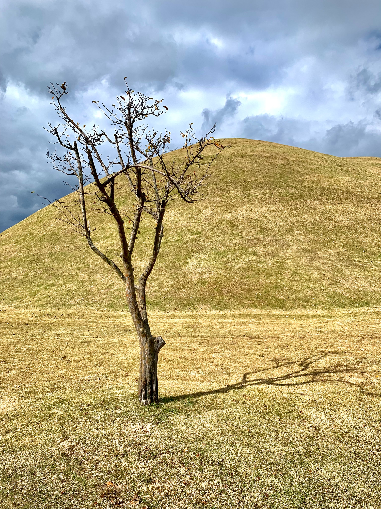

WEB
- 개미와 세력
- 존버
- 이야깃거리
이야깃거리
신라의 천년고도였던 곳이니만큼 전통적으로 번성하던 곳이었지만 현대에는 과거의 위상이 오히려 발목을 잡고 있다. 1960년대까진 포항이나 구미보다 훨씬 큰 도시였지만[30] 경주의 수많은 유적들 때문에 인근 도시들처럼 중공업을 적극적으로 육성할 수도 없었고, 청년층이 서울이나 울산, 포항, 대구, 구미 등 가까운 공업 도시로 이주하는 바람에 근 40년 동안 인구 증가가 멈춰 있었다. 1999년 292,480명을 정점으로 지속적으로 인구수가 감소하여 2022년 25만 붕괴를 바라봐야 할 위기에 치닫게 되었다.
